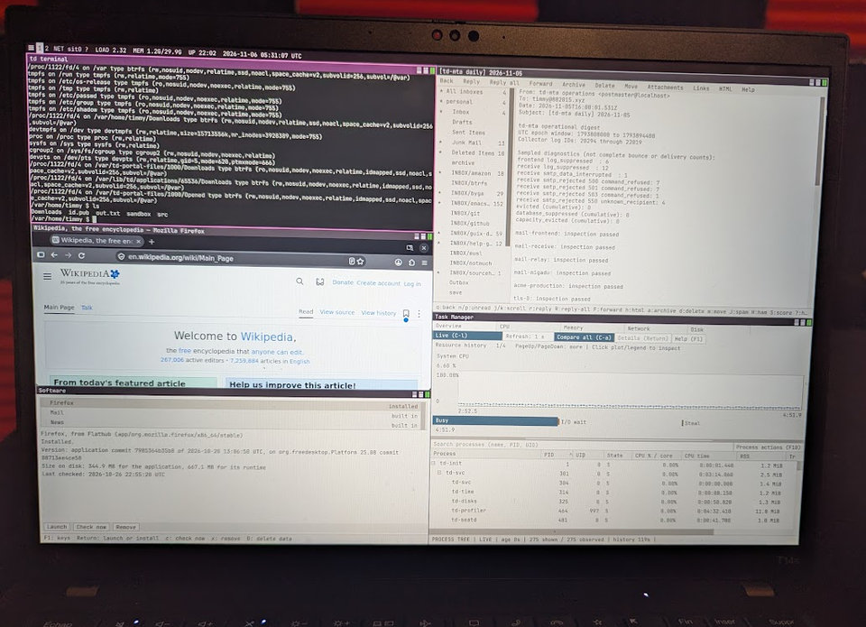

Hermetic builds.
Builds run offline in sandboxes with declared inputs, pinned sources, and pinned toolchains. The host’s tools and libraries stay outside the target build.
A personal Linux distribution
Opinionated. Homemade.
A little “not invented here.”
An immutable system, a Rust-first desktop, and a growing collection of tools built to fit together.

The idea
td has its own compositor, terminal, editor, mail client, news reader, photo viewer, password manager, and agent harness. There’s a shared UI toolkit underneath, also written here. “Not invented here” runs pretty deep.
The compositor, terminal, editor, and UI toolkit have zero external crate dependencies: just Rust’s standard library and td’s own code. It’s a personal Linux distribution, with opinions and rough edges to match.
Read more about tdBuilds run offline in sandboxes with declared inputs, pinned sources, and pinned toolchains. The host’s tools and libraries stay outside the target build.
Content-addressed outputs live at their own hash-named paths in /td/store. Rust recipes describe the graph, and td’s own builder realizes it. No Nix runtime required.
The system lives in a read-only image. Your data lives separately, and updates retain the previous deployment for rollback.
No account password to create or remember. Local administration asks for explicit consent to a specific operation.
td-init, td-svc, and td-login handle boot, service supervision, and login. The system has its own path from PID 1 to the desktop.
The build system itself has zero external crate dependencies. Pull the source, change the recipes, and build the system locally.
Give it a try
A personal project, still taking shape.
Start with the release instructions for your image.